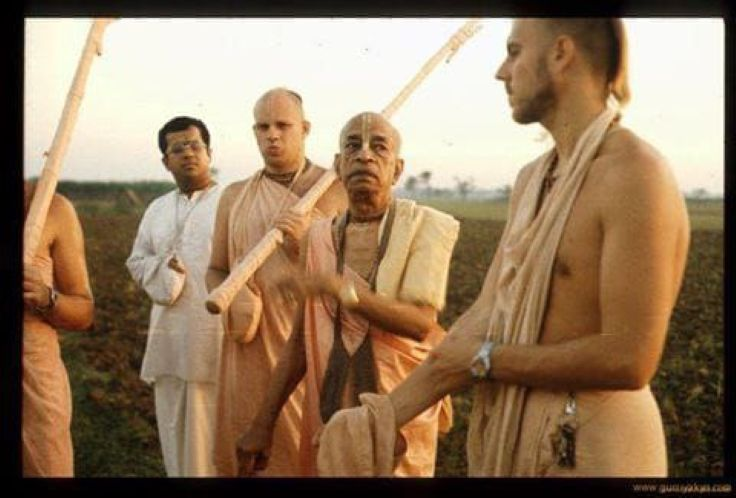

Prabhupada’s presence was so powerful
Posted on : 19th October, 2024

Jayapataka Swami : Prabhupada’s presence was so powerful that when you came in his presence, you felt as if you were no longer part of the material world. You felt that you were in some kind of a spiritual, transcendental environment. I didn’t know about Vrindavan then, but now we would say that Prabhupada brought Vrindavan with him. We felt the Vrindavan mood whenever we came in Prabhupada’s presence. He was carrying Krishna in his heart. I didn’t understand that but I felt it. Just being with Srila Prabhupada I could feel myself change. I could see that he was a genuine spiritual master, and that he practiced what he preached. Other people that I visited had books and teachings, but they didn’t practice those things. Seeing this helped build my faith and Prabhupada was very merciful to me.
Ref- Prabhupad Memories Interview 1.1